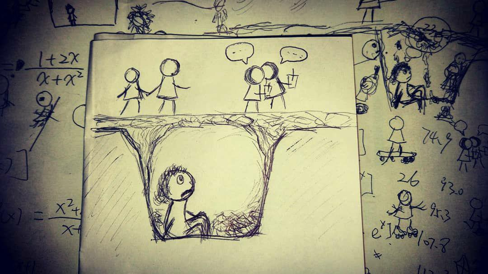
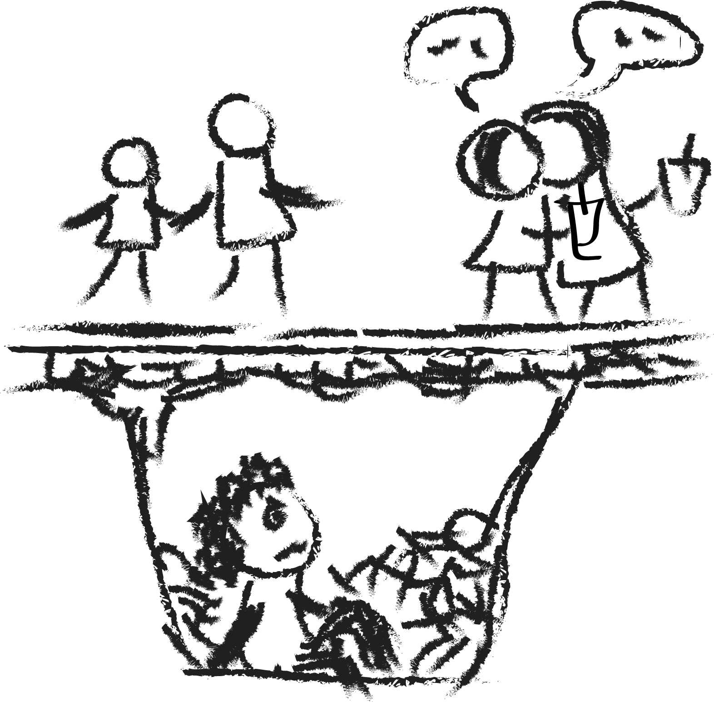

1 | 书名： 樱草忌 |
本是無解方程，偏尋近似之解，解得滿紙傷悲。
花了不长时间就读完了这本书，这是我第一次读陆秋槎的作品，昨晚纠结了很久读元年春还是樱草忌，冥冥之中可能就是那么巧合总能让我在相似的心境下选到一本相似的书。它的本格韵味并不浓 ，但这并不妨碍它成为一本我喜欢的书，里面的故事却令我久久无法释怀。就像我在短评里写的，把故事里的人物各取一分就可以拼凑出一个相似的我。
可能，这说是一篇书评并不合适，原谅我写下的更多的是我的回忆和书里的故事的重影，请别问我是谁，谢谢。
仅仅读着引子，看着叶荻口中描述的远江就让我爱上了这个故事。远江说「也许我真的跟小学生没什么区别把。」在我高中和初中的时候，如果不是穿着校服，身着便装上街，店员总是会以小学生的视角来推荐物品，可能我也真的和小学生没什么区别吧。依稀记得高中的时候回初中去看老师，因为高中和初中的校服一样，趴在栏杆上等着老师的时候，旁边一个初一的学生甚至以为我是他的同级同学，问我考得怎么样，哭笑不得。像远江一样，穿校服甚至会给她安全感，因为完全不懂得如何选择，高中的时光基本都在学校上课居多，校服也基本上是我的标配，而南方的短袖更是可以贯穿一整年，未及寒冬，我总是一件短袖校服，套着长袖校服，喜欢买大一号的校服，卷起袖子，松松垮垮的，那几乎是我整个中学时代最常出现的形象。甚至到了大学，仍有人初次见面觉得我应该是未成年的高中生。以至于看到对于远江的描述，我甚至觉得这个角色和我有几分相像。
随着阅读的深入，渐渐看到，远江的生活，那种受尽拘束的生活，虽然自己中学时代家里也管得很严，不过比起文中这个虚构的远江，大概还是幸福得许多的。看到发生在远江身上的故事，很自然地就会想起来曾经的时光，及至期末，无论是老师还是家长都很不满看到小孩子拿着所谓的课外书。曾记得不知是小学还是初中，偷偷借了一本书放在抽屉看，假装在备战期末考，最后被发现，那时候最怕的就是家长会不会一怒之下把书撕了。高三的时候更是因为回家吃晚饭完的时光在看所谓的「闲书」和家里大吵了一架，那阵子正是我成绩最糟糕的时候，也是最挣扎最迷茫的时候，书唯一能给我安慰，却总被排斥。于是我也学会了躲躲藏藏，像远江所做的那样。文里提到远江的并没有零用钱，这又像极了曾经的我，我的所有支出都是告知父母后支取，并不像同龄的孩子那样有一笔固定的零花钱，后来我甚至自己都不想要零花钱了，因为已经似乎没有那个必要，就像远江一样，那个年纪的我也一样想要拥有属于自己的故事和秘密，并不想事无巨细地告知父母，然后支取一笔零花钱，可能也是这样的原因，像远江一样，我也常常拒绝同学的邀请，一起看电影，一起出去玩，这些事情都离我很遥远，后来，我习惯了一个人，至今都习惯，不过，这也许怪不得当初，也许我生性如此，生来无解。
远江读了很多很多的书，常常去借书，常常在课上读书。我不记得从高中的哪一天开始，我的所有下课时间都被我用来看书，这个习惯一直保留到现在，现在我仍然惊讶短短的下课时间竟然让我读完了这么多的书。有时也会在课上看书，甚至在数学课上，不过和远江不同，我并不排斥数理，并且恰恰相反，我热爱，也许这在数学课上坐在第一排还悄悄看着书的我的罪孽总是要还的，所以最后在一向得意的数学上失手惨败。那些日子，在每个周六下午也就是这周的学校时光结束之后，我大都会飞奔向图书馆，借书，还书，享受图书馆的安静，我们当地的图书馆并不太多人，也不大，很是安静，那几乎是我高中最喜欢的去的角落，但我放学后的时间也接近它闭馆的时间，所以能待在那里的时光并不太长。那时候最喜欢的是推理小说，在那个不大的图书馆，几乎每一本推理小说我都清楚地知道它放在哪，数量也并不多，知道我这个习惯和喜好的基本上只有我的同桌，那时候她常常带着一本三毛，我读着推理，她读着三毛，我们可能是班里有些独特的一对同桌，后来读了大学，我竟也喜欢上了三毛，只是不知道同桌有没有喜欢上推理呢。因为零用钱的缘故，故事里的远江常常借书，自己却并没有拥有很多的书。虽然父母并不反对我买书，不过在中学时代我几乎没有买过书，到了大学，自己支配每一个月的生活费，才开始买书，甚至有些疯狂地买书，几乎大半生活费都被用来买书了，宿舍满是没有拆封的书，每次回家一定要带回一大摞读完的书，以至于我的舍友以为我的家里有个很大的书房，有很大的书柜，其实都并没有，我不得不清理掉从前的各种教科书来腾出空间，其实是有些不舍的，尽管是课本，也有我的痕迹。
故事里的很长篇幅是远江的日记。从某一天开始，我也写日记。远江的生活更像是我初中的生活，没有手机，所有人没法联系我，总喜欢独自一人。初三近中考的时候我写过日记，也写在本子上。后来中考完，假期并没有给我太多的印象，我也没有继续我的日记。直到高二的某一天，就像远江遇见了叶荻，我也遇见了我的 α，于是我也开始写日记，并一直到现在，只是，α 已经不再是我的 α，而我也没有再找到 β。和远江一样，一直想着希望有故事可以书写，所以直至现在，每天的任务让我应付得已是很疲惫，但却会庆幸还存在些许想让我记下来的时光。只不过，那时候的我，已经不敢再写在纸上，无论是放在学校还是家里都不安全，更何况能写日记的时间本来也就很少。我总是在黑夜里完全不开灯，凭着感觉在纸上写下日记，等到白天有机会再录入电脑，然后就将那张纸丢弃，为了防止偶然被发现，字迹潦草的经常连自己都看不清，甚至因为在黑暗中书写，字迹常常重叠，也常常忘记将纸张藏到了哪里去，我至今都没搞明白当初我是怎么做到的。因为想要拥有自己的秘密，和远江一样，我们都学会了躲躲藏藏，用了所有能想到的最好的办法。
想来，上了高中的我是有几分叶荻的样子的，虽然有手机，不过基本上也没几个人知道我的手机号。故事里的叶荻说自己的朋友除了远江，要么是因为坐得近一起吃午饭，要么是因为同路一起回家。这两者我都没有，但回忆起我当初的时光，最熟悉的似乎也大都是坐在附近的人，除了α 。当我看到其中几句话，完完整整地被戳到了痛处，秦虹怒吼着跟叶荻说「让我来教你怎么和人做朋友吧……」：
朋友要一起吃午饭！
朋友会上课传纸条……
朋友要每天给对方打电话。
朋友还要一起拍照……
朋友还要一起写作业。
朋友要一起去厕所。
如果有任何人这样来对我怒吼，我也一样会愣在原地，无法反驳，可能，就真的是没有朋友吧，这些，我都不曾经历，所以，大概一直以来，也没有弄懂「朋友」的含义。对应着那每一句，中学时代我是走读生，我看着我的两个同桌传纸条，我害怕给任何人打电话，我的取景框里永远只有风景，我在文科的课写理科的作业，如果不是必要，我甚至不想去厕所。很长一段时间里，我也一直思考过这个问题，但始终没有解。很庆幸故事里荐瑶挺身而出，如果发生在我的生活里，大概没有人会为我声援吧。
故事里对姚老师的笔墨不算很多，但我很喜欢，同时隐隐觉得这个角色背后应该还有着什么故事吧。不喜与人交往，不善与人交往，这正是我的真实写照。很喜欢文中借姚老师之口说出来的那句话：
只要活着，就不得不与人相处，就要去猜测别人的想法。明知道从理论上讲，确切地猜中是根本不可能的，却又不得不求出一个个「近似解」，以便待人接物时不要有什么闪失。
可是，真的有解吗 ，这个方程，真的可以解吗，无解的方程，再怎么去求它的近似解，不都是徒劳吗？
阅读的时候有一瞬间，觉得自己和远江，就像是活在冰封的湖面之下，只有在世界变得温暖的时候才有人不幸地从破裂的冰面下滑，若不幸世界马上冷了起来，他们便有机会伴我度过一些时光。可世界终有放晴的时日，他们便爬出了这个地窖，我也帮着他们离开。世界又开始变冷，冰面又封了起来，于是我再次隐匿于冰面之下，就像下面这几笔拙劣的画，像个不存在于社会的观察者。


1 | 鳳凰花開依然 |
謹以此不成韻脚的句子獻給曾經走進我心裏的那個女孩 α 。